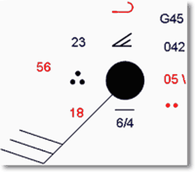
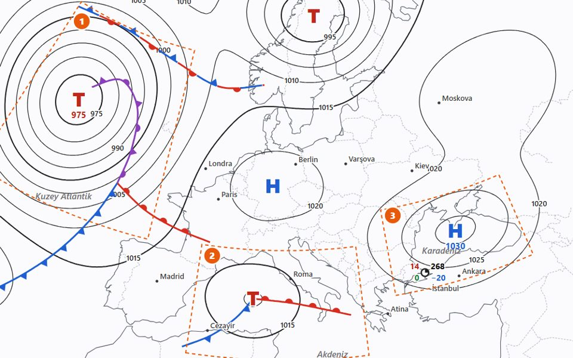
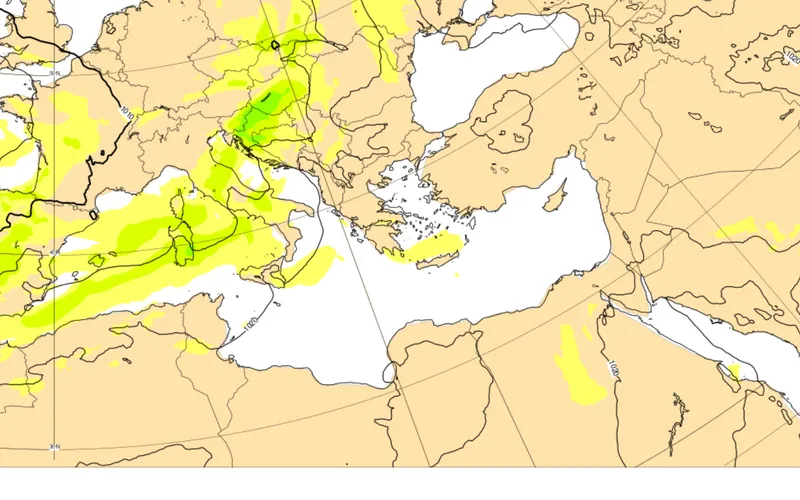
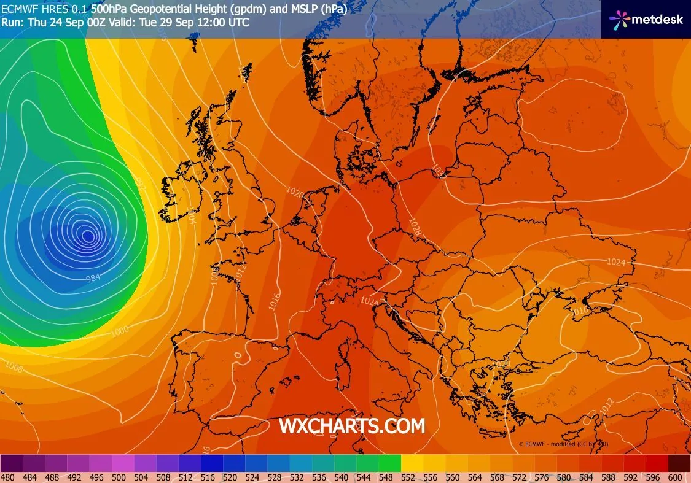

MTO 302E
Hava Analizi ve Öngörü

Harita Okulu
- SYNOP kodu, istasyon modeli, trof ve sırt, cepheler
- 11 laboratuvar: değeri değiştir, sonucu gör
- Gerçek haritalar ve sınav provası

Brifing atölyesi
- Sinoptik brifing adım adım, her harita örnekle
- Sunum modu, harita harita gezinti
- SYNOP çözücü, Skew-T, meteogram

Brifing örneği
- Beş konuşmacılık gerçek bir brifing
- Her harita tık tık, konuşmacı başına kalıp cümle
- Olası sorular ve Kendini dene

Proje rehberi
- Brifing sunumu, proje raporu ve sunumu
- Ne isteniyor, adım adım nasıl yapılır
- Araçlar: saat, katmanlar, SYNOP, mekanizma
MTO 229E
Bulut ve Yağış Fiziği
MTO 316
Hidrometeoroloji
MTO 303E
Hesaplamalı Akışkanlar Dinamiği
Bu aramayla eşleşen bölüm yok. Başka bir kelime dene: «SYNOP», «bulut», «HEC-HMS».